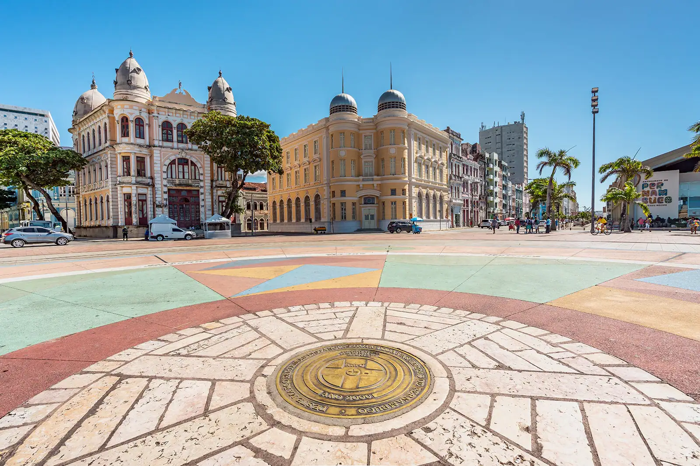

Marco Zero
O Marco Zero foi onde a cidade literalmente começou. Localizado na Praça Rio Branco, é lá que se encontra o ponto inicial para a contagem das distâncias da cidade.
Dali, além de prédios históricos e da movimentação cotidiana da capital, turistas e moradores podem aproveitar toda a infraestrutura da região, com bares, restaurantes, museus e centro culturais. De segunda a segunda, há sempre gente movimentando o local em qualquer hora do dia e da noite. Um passeio completo e muito diversificado.

Localização: Av. Alfredo Lisboa - Recife, PE, 50030-150